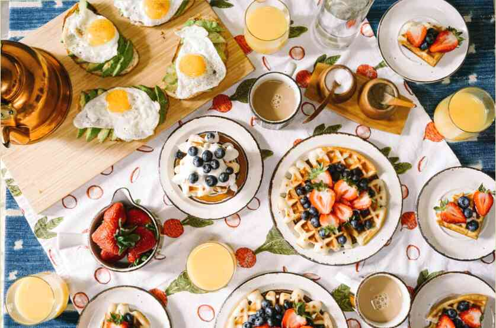

Ho Masha, ora ho 41 anni. A 35 anni il mio peso è di 115 kg. Poi ho cominciato la sua lotta con il sovrappeso. Ho perso peso, tolstela e si alzava di nuovo sulla strada la lotta per la snellezza. All'inizio del percorso sono riuscito per un anno e mezzo a ridurre il peso con 115 fino a 70 kg. Poi sono rimasta incinta e a 38 anni ha dato alla luce un bambino. Nel decreto di nuovo recuperato. Nell'estate del 2018 sulla bilancia è stato di 86 kg.
Io non ripetere gli errori di gioventù. Niente scioperi della fame e diete estreme. Andata comprovata caro. Una corretta alimentazione, modalità, fitness, un deficit calorico ed ecco che alle spalle ha già 23 kg. Ora il mio peso 63 kg. Meno di quanto non fosse prima del parto.
Perché ho sempre fame?
Questa domanda mi fanno molto spesso. Ho dovuto capirlo, per sbarazzarsi di eccesso di peso.
La fame costante - non è innata qualità. Avrà le sue ragioni.
Inizialmente la causa di un aumento dell'appetito possono essere disturbi ormonali, assunzione di alcuni farmaci. Ad esempio, aumento dell'appetito si osserva nella sindrome dell'ovaio policistico. Tale disturbo è stato per me. Aumento dell'appetito può anche causare ormonali contraccettivi orali, antidepressivi, farmaci per il diabete e l'ipertensione, stimolanti della circolazione cerebrale.
Nel mio caso su sfondo ormonale disturbi sviluppato alimentare la dipendenza. Ho iniziato a sedersi su una dieta per perdere peso. Drasticamente ridotto dieta e fame. La risposta del corpo è stato un rallentamento del metabolismo e aumento dell'appetito. Dopo ogni dieta mi ha attaccato infernale voglia di cibo. E il cibo sembrava estremamente delizioso. Ho pereedala e rimproverò se stesso, promettendo di prendere ancora più rigorosa dieta e tutti ripristinare.
I nutrizionisti dicono: il digiuno e diete di meno di 1200 kcal, il nostro corpo reagisce il rallentamento del metabolismo e aumento della sensazione di fame per parecchi anni! Il corpo interpreta il senso di fame la - minaccia per la vita, la mancanza di sostanze nutritive. La prima reazione - di compensare la mancanza di scorte (ho perso peso), la seconda per ricostituire le riserve di pi√π e spendere di pi√π con parsimonia (io mi fa molto piacere dai uno sguardo al cibo e non perso peso anche sulla scarsa diete).
Rigorosa dieta e digiuno - il primo motivo è la sensazione di fame.
La seconda - alimentare la dipendenza.
Ho usato il cibo per ottenere divertimento. E se qualcosa dà piacere, voglio farlo più spesso, non è vero? Il cibo è rassicurante, confortante, intrattiene, provoca il rilascio di endorfine, gli ormoni della felicità. E ' così semplice e disponibile. Un problema - il corpo non è adatto per un sacco di, la sua capacità è limitata. Non c'è problema! Prisposoblyu!
Come fare? Ci sono modi.
Provato - un po ' di più non ci sono. Non è possibile consumare la colazione, il pranzo limitarsi a fare uno spuntino e la sera sarà un appetito vorace. Poi si può mangiare un sacco di deliziosi calorico dell'alimento e anche non una volta. Un altro modo - ci sono un sacco di dolci. Un grande flusso di glucosio provoca una risposta ormonale - il rilascio di insulina, che trasforma il glucosio in grasso. E poi arriva un forte senso di fame!
Se c'è un dolce - si può mangiare praticamente senza limiti. Torta, torta, cioccolato. La fame sarà solo più forte. E un piacere continuo. Ciò che è necessario per alimentare un tossicodipendente. Naturalmente, questo avviene inconsciamente. Nessuno dice: "che cosa dovrei mangiare per me e' stato?", semplicemente "voglia di dolce".
Un altro modo per rafforzare la fame - alimenti salati e glutammato monosodico.
Ho mangiato un sacco di acqua salata, affumicata cibo. Patatine, snack, cracker. Il glutammato di sodio è praticamente ovunque. Luminoso esempio - il cibo degli dei Istantanei. Perché noi lo amiamo così tanto - una bella dose di glutammato di sodio. Vi ricordate questo inebriante profumo? Nessun bistecca con lui non batte.
L'alto contenuto di sale ci sono in tutti i prodotti. Anche sani. Ho pensato che solo 180 gr (tre pezzi) pane integrale di VkusVill contengono tariffa giornaliera di sale! E ' un prodotto sano, non salato al gusto! Che dire le solite salsicce e salumi.
Perché li amiamo? Sol - esaltatore di sapidità e stimolante dell'appetito. Aiuta più di mangiare, e quindi ottenere più piacere del cibo. Cibo salato è possibile mangiare almeno due volte di più. Prendete non salata cibo e lo stesso, ma con il sale. Che mangia di più?
Mele cool aumentare l'appetito. Tra l'altro, tutte le persone amano spuntini esattamente mele. E mi sono seduta sulla mela dieta.
Che cosa aumenta il senso di fame?
La disidratazione. La mancanza di normale consumo di acqua pulita - un compagno di frequente obesità. Invece di tè, caffè, succhi di frutta dolce. Questo è tutto ciò che aumenta la disidratazione e la sensazione di fame. Spesso pieni di gente assolutamente non vogliono sostenere questa linea - che vuoi, solo non bere acqua pulita. Desidera garantito il fallimento con la dieta - bere un paio di tazze di caffè durante il giorno. La sera si scopre che, nonostante la quarantena, mangia taglienti stripsy teriyaki di CFS (basato su una storia vera).
La mancanza di sonno! Un altro modo per stimolare la fame.
Vuoi mangiare di più - torna dopo 12 e dormire meno di 8 ore. Vivi in modalità di stanchezza e di stress.
Per sconfiggere alimentare la dipendenza ho dovuto realizzare tutte queste cause fame. Capire che è in mio potere escludere dalla sua vita. Rinunciare alla sensazione di fame e smettere di fare quello che lui chiama.
E questo significa:
- Non permettere grandi interruzioni nel cibo e la sensazione di fame. Mangiare al regime. Almeno tre volte al giorno. Solo modalità e alimentazione completa e bilanciata in grado con il tempo di calmare il corpo e disattivare la modalità di accumulo di scorte. Non c'è tre ore prima di coricarsi, per svegliarsi con gusto e ben prima colazione.
- Dormire dalle 23:00 non meno di 8 ore. In questo momento è prodotto di bruciare i grassi ormone e tutti gli altri, regolano il nostro peso.
- Bere almeno 1,5 litri di acqua pulita, di non bere bevande zuccherate, limitare le bevande che causano disidratazione.
- Ridurre il consumo di sale. Mi propongo alla norma - 5 g di sale al giorno.
- Rinunciare a carboidrati veloci. Torte, dolci, zucchero bianco, l'ho eliminato. I miei carboidrati questa zuppa, pane integrale, verdure, frutta, pp-dolci nel primo pomeriggio.
- Rinunciare a tutto pasto ad alto contenuto di sale, glutammato di sodio, qualsiasi esaltatori di sapidità. E questo è molto ampio elenco di alimenti. Scegliere una semplice e il cibo sano. Senza OGM e antibiotici. Comprare rustico e prodotti agricoli.
Idealmente - per rimuovere tè e caffè, almeno per il momento. È possibile sostituire il radicchio, decotti di erbe.
Conseguenza del consumo di cibo malsano - la povertà della microflora intestinale. Io mangio cibi fermentati. Se necessario, bevo lattulosio (prebiotico, migliora la funzionalità dell'intestino a causa di alimentazione microflora).
- Ci sono un basso contenuto calorico pasto (con una densità di calorie a 1 e minore), per ricevere una grande quantità di cibo e sentire la saturazione.
- Evitare lo stress e superlavoro. Cercare fonti di gioia, di ispirazione, di endorfine.
Leggi anche il mio articolo sulla presunta fame. Questo informazioni importanti per sconfiggere sovrappeso!
Grazie per i like, i commenti, le sottoscrizioni ‚úç moltoüåàüíñ


Lascia un commento